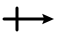

1 有机化合物分子结构基础¶
说明
本文档仅涉及部分内容，仅可用于复习重点知识
1 有机化合物的基本类型¶
按碳架分类
按官能团分类
官能团 ：决定化合物的主要性质，反应化合物的主要特征
| 官能团结构 | 官能团名称 | 化合物类型 | 代表化合物 |
|---|---|---|---|
| 烯基 | 烯烃 | \(CH_2=CH_2\) 乙烯 | |
| 炔基 | 炔烃 | $HC \equiv CH $ 乙炔 | |
| 苯基 | 芳香烃 | \(C_6H_5CH\) 甲苯 | |
| 卤素 | 卤代烃 | \(CHCl_3\) 氯仿 \(C_6H_5Cl\) 氯苯 |
|
| 羟基 | 醇，酚 | \(CH_3OH\) 甲醇 \(C_6H_5OH\) 苯酚 |
|
| 烷氧基 | 醚 | \((CH_3CH_2)_2O\) 乙醚 | |
| 过氧基 | 过氧化物 | \(t-BuOOH\) 叔丁基过氧化氢 | |
| 巯（\(\text{qi\'{u}}\)）基 | 硫醇，硫酚 | \(CH_3CH_2SH\) 乙硫醇 \(C_6H_5SH\) 苯硫酚 |
|
| 烷硫基 | 硫醚 | \(CH_3SCH_3\) 二甲硫醚 | |
| 二硫基 | 二硫醚 | \(C_6H_5SSC_6H_5\) 二苯基二硫醚 | |
| 氨基 | 胺（\(\text{\`{a}n}\)） | \(CH_3NH_2\) 甲胺 \(C_6H_5NH_2\) 苯胺 |
|
| 硝基 | 硝基化合物 | \(CH_3NO_2\) 硝基甲烷 | |
| 醛基（甲酰基） | 醛 | \(CH_3CHO\) 乙醛 | |
| 羰基 | 酮 | \(CH_3COCH_3\) 丙酮 | |
| 羧基 | 羧酸 | \(CH_3COOH\) 乙酸 \(C_6H_5COOH\) 苯甲酸 |
|
| 酰卤基 | 酰卤 | \(CH_3COCl\) 乙酰氯 | |
| 酸酐基 | 酸酐 | \((CH_3CO)_2O\) 乙酸酐 | |
| 酯基 | 酯 | \(CH_3COOCH_2CH_3\) 乙酸乙酯 | |
| 酰胺基 | 酰胺 | \(CH_3CONH_2\) 乙酰胺 | |
| 氰（\(\text{q\'{i}ng}\)）基 | 腈（\(\text{j\={i}ng}\)） | \(CH_3CN\) 乙腈 \(C_6H_5CN\) 苯甲腈 |
|
| 亚砜基 | 亚砜 | \(CH_3SOCH_3\) 二甲亚砜 | |
| 砜基 | 砜 | \(CH_3SO_2CH_3\) 二甲砜 | |
| 次磺酸基 | 次磺酸 | \(C_6H_5SOH\) 苯次磺酸 | |
| 亚磺酸基 | 亚磺酸 | \(C_6H_5SO_2H\) 苯亚磺酸 | |
| 磺酸基 | 磺酸 | \(C_6H_5SO_3H\) 苯磺酸 |
2 共价键¶
八隅体规律
共价键特点：
- 方向性：两原子轨道必须沿某一方向相互重叠时，重叠程度越大，形成的键越牢固
- 饱和性：两个原子的未成对电子自旋反平行配对后，再不能与第三个电子配对
- 定域电子：成键电子只能在轨道重叠的区域内运动
3 有机化合物结构的表达方式¶
3.1 Lewis 结构式¶
以电子对的形式来表示共价键的分子结构式
用短线表示成键电子，用“:”表示孤对电子
用“+”和“-”表示原子所带的电荷称为 式电荷（FC）
\(FC = V - (N + \dfrac{S}{2})\)
- V：中性原子的价电子数
- N：分子中该原子的孤对电子数目
- S：成键电子的数目
3.2 \(\text{Kekul\'{e}}\) 结构式¶
省去孤对电子
4 杂化轨道理论¶
\(sp^3\) 杂化
\(sp^2\) 杂化
\(sp\) 杂化
| 杂化类型 | 孤对电子对数量 | 空间构型 | 键角 |
|---|---|---|---|
| \(sp^3\) | 0 | 正四面体形 | 109°28′ |
| \(sp^3\) | 1 | 三角锥形 | |
| \(sp^3\) | 2 | V 形 | |
| \(sp^2\) | 0 | 平面三角形 | 120° |
| \(sp^2\) | 1 | V 形 | |
| \(sp\) | 0 | 直线形 | 180° |
5 共价键的键长、键能和键角¶
5.1 键长¶
能量达到波谷时的核间距称为共价键的 键长
C—C 键长：154 pm
5.2 键能¶
气态时均裂一个共价键所需要的能量称为 键解离能，键能 则是断裂相同类型键的解离能的平均值
5.3 键角¶
键与键之间的夹角称为 键角
5.4 分子模型¶
球棍模型和空间填充模型
6 共价键的极性、分子的偶极矩和诱导效应¶
6.1 元素的电负性与共价键的极性¶
电负性：吸引电子的能力
相同原子形成的共价键，由于其电负性相同，形成 非极性共价键。而电负性不同的两个原子，电子云会偏向电负性较大原子的一端，发生 键的极化，形成 极性共价键。常用 \(\delta^+/\delta^-\) 表示极性共价键带电荷的情况，用箭头表示电子对偏移的情况，箭头方向是从带正电原子指向带负电原子
当两个原子的电负性差值大于等于 2 时，可以发生电子的转移，形成 离子键
衡量共价键的极性大小用 键矩 —— 键的偶极矩，用符号 \(\mu\) 表示。正、负电荷中心的距离 \(d\)，正或负电荷 \(q\)，\(\mu = d \times q\)，单位是 \(D\) （德拜）
键矩是一矢量，方向通常规定为由正到负，用符号  表示，箭头指向带负电荷原子的一端
电负性差值越大，键矩越大
杂化轨道中 s 成分越多，对核外电子的束缚力越大，因此，不同杂化轨道碳原子的电负性大小顺序为：\(C_{sp} > C_{sp^2} > C_{sp^3}\)
6.2 分子的偶极矩¶
分子的偶极矩是各键矩的矢量和。矢量和为 0 是非极性分子，不为 0 是极性分子
分子的极性导致整个分子电子云密度分布不均匀。一种直观的表示分子中各区域电子云密度分布情况的方法称为 静电势图。颜色深浅表示势能的高低
6.3 诱导效应¶
原子的电负性不同导致分子中电子密度分布不匀，使整个分子发生极化，这种效应称为 诱导效应，用 \(I\) 表示
诱导效应是一种由于原子电负性不同引起的静电作用，是永久性的。其特征是电子云发生偏移沿着 \(\sigma\) 键传递，并随着碳链的增长而迅速减弱或消失
通常以 C - H 键中的氢原子为标准：\(Ι = 0\)，原子或基团的吸电子能力比氢强，则其具有吸电子诱导效应（用 \(-I\) 表示），原子或基团的吸电子能力比氢弱，则其具有给电子诱导效应（用 \(+I\) 表示）
一些常见原子（或基团）的吸电子诱导作用相对顺序：
一些常见原子（或基团）的给电子诱导作用相对顺序：
诱导效应能够改变分子的物理性质和化学性质
7 分子轨道理论¶
分子轨道理论（MO 理论）：原子轨道是描述原子中电子运动的状态函数，用 \(\phi\) 来表示。分子轨道是描述整个分子中电子运动的状态函数，用 \(\Psi\) 来表示。原子轨道波函数各乘以某一系数相加或相减，得到分子轨道波函数。组合时原子轨道对分子轨道的贡献体现在系数上，组合前后轨道总数不变。如果两个符号相同（即相位相同）的原子轨道波函数相加，得到的分子轨道能量比原子轨道能量低，称为 成键轨道，用 \(\Psi\) 表示。如果相减，则得到的分子轨道犹如波峰和波谷相遇而相互减弱一样，中间出现 节面，电子出现在节面上的概率为零，这样的分子轨道比原子轨道能量高，称为 反键轨道，用 \(\Psi^*\) 表示
休克尔分子轨道法（HMO）
成键三原则：
- 只有对称性相同的原子轨道，即“对称匹配”，才能有效成键
- 只有能量相近的原子轨道，才能有效成键
- 原子轨道重叠程度越大，形成的键越牢固
分子轨道理论认为：成键电子不是“定域”在成键轨道中，而是在整个分子内运动，即是“离域”的。这也是价键理论与分子轨道理论最根本的区别
8 共轭体系和共轭效应¶
8.1 \(p \text{-} p\) 共轭¶
羰基中的碳氧双键，成键轨道上的 2 个电子更偏向氧原子。这种电子偏向某一个原子的运动，称为 \(\pi\) 电子的 离域，电子离域只能在共轭体系中进行。羰基的 \(\pi\) 键由 \(p \text{-} p\) 轨道形成，称为 \(p \text{-} p\) 共轭
8.2 \(p \text{-} \pi\) 共轭¶
如果与 \(\pi\) 键相连的原子具有一个与 \(\pi\) 键平行的 \(p\) 轨道，那么这个 \(p\) 轨道就可与 \(\pi\) 键共轭，形成 \(p \text{-} \pi\) 共轭体系
8.3 \(\pi \text{-} \pi\) 共轭¶
两个 \(\pi\) 键通过一个单键相连形成的共轭称为 \(\pi \text{-} \pi\) 共轭。\(\pi \text{-} \pi\) 共轭体系可以完全由碳原子组成，也可以由碳原子和其他原子共同组成。只要是两个不饱和键通过一个单键相连，就可以形成 \(\pi \text{-} \pi\) 共轭体系
共轭体系的特点：
- 共轭使得参与共轭的共价键的键长趋于平均化
- 由于电子优先填充到能量更低的成键轨道上，因此体系的能量下降，稳定性增加
8.4 共轭效应¶
- 常见给电子共轭效应（+C）的基团：\(OH, OR, SH, SR, NH_2, NHR, NR_2, O^-, X\)
- 常见吸电子共轭效应（-C）的基团：\(C=O, NO_2, CN\)
9 共振理论¶
9.1 共振结构与共振杂化体¶
共振结构：每个 Lewis 结构式代表一种极限结构
共振杂化体：所有共振结构的加权平均形式
9.2 共振结构的书写¶
1.共振结构之间用双箭头联系。共振杂化体比任何一个共振结构都稳定
2.共振的本质是共轭体系中电子的离域，即电子的合理运动。共轭体系上的电子可以离域。离域电子发生合理的离域运动，原子核的相对位置不能改变，即骨架不变。一对电子的离域用弯箭头 \(\curvearrowright\) 表示，单个电子的离域用鱼钩 表示。用虚实线表示键长平均化，用 \(\delta^+\) 和 \(\delta^-\) 表示原子所带的相对电荷密度
3.所有共振结构中的原子必须符合价键理论的规则。但对于第三、四周期的元素来说，八隅体规则可能并不适用
4.所有共振结构中的净电荷数必须相同
5.所有共振结构体中的未成对电子数必须相同
6.\(\pi\) 电子从富电性原子向缺电性原子偏移
7.书写共振式时，需要满轨道方向性的要求
9.3 共振稳定作用¶
- 共振结构越稳定，对共振杂化体贡献越大
- 共振杂化体的内能低于任何单个共振结构的内能
- 参加共振的结构越多，共振杂化体越稳定
- 共价键越多越稳定
- 具有八隅体结构的原子越多越稳定
- 形式电荷越接近 0 越稳定，电荷分离将导致稳定性降低
- 键角和键长变形较大的共振式极不稳定
10 分子间弱的作用力¶
10.1 范德华力¶
分子之间存在非定向的、无饱和性的、较弱的相互吸引的作用力
范德华力的大小会影响有机化合物的熔点、沸点和密度等物理性质
类型：
- 非离子型的极性分子具有永久偶极矩，它们之间存在 偶极-偶极相互作用力，也称为 取向力
- 极性分子堆非极性分子有极化作用，使非极性分子的电子云变形，产生诱导偶极矩，永久偶极矩与其诱导出的瞬间偶极矩相互作用。这种偶极-诱导偶极相互作用力称为 诱导力
- 非极性分子之间由于电子的概率运动，可以相互配合产生一对方向相反的诱导偶极矩，这种诱导偶极-诱导偶极相互作用力称为 色散力 或 伦敦力，它是范德华力的主要来源。色散力与分子的变形性有关，可变形性越强越易被极化，色散力也越强
非极性分子：随分子量增大，原子半径增大，电子增多，分子变形性增加，因此色散力增大，分子间力增强
10.2 氢键¶
\(X \text{---} H \text{- - -} Y\)
由于 \(H\) 的电负性小，公家电子通常偏向于 \(X\)，使得 \(H\) 缺电子。若与电负性大的原子 \(Y\) 接近，\(Y\) 的孤对电子则可以补充到缺电子的 \(H\) 原子上
- 含 Y 的分子称为氢键受体（或质子受体）
- 含 \(X \text{---} H\) 的分子称为氢键给体（或称质子给体）
- \(H \text{- - -} Y\) 则为氢键，其强度随 \(X\) 电负性的增加而增加
- \(X\) 和 \(Y\) 通常为 \(F\)、\(O\)、\(N\) 原子
氢键比共价键弱，但比范德华力强。它具有饱和性和方向性
氢键对有机化合物的熔点、沸点、溶解度、密度等物理性质的影响比较大